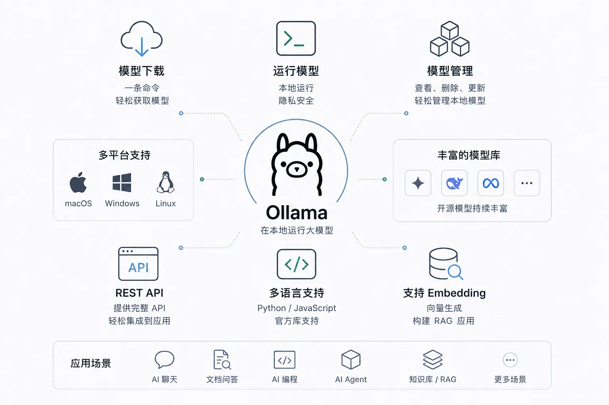

Ollama 概要
Ollama はオープンソースの大規模言語モデル（LLM）プラットフォームであり、ユーザーがローカルで大規模言語モデルを簡単に実行、管理、操作できるようにします。
Ollama は、さまざまな事前学習済み言語モデルを読み込んで使用するためのシンプルな方法を提供し、テキスト生成、翻訳、コード作成、質問応答など、さまざまな自然言語処理タスクをサポートします。
Ollama の特徴は、既製のモデルとツールセットを提供するだけでなく、便利なインターフェースとAPIも提供し、テキスト生成、対話システムから意味分析までのタスクを迅速に実装できることです。
他のNLPフレームワークとは異なり、Ollama はユーザーのワークフローを簡素化することを目的としており、機械学習が深い技術的バックグラウンドを持つ開発者だけが触れられる領域ではなくなるようにしています。
Ollama は、純粋なCPU推論や各種の基盤となる計算アーキテクチャ（Apple Silicon など）を含む複数のハードウェアアクセラレーションオプションをサポートし、異なる種類のハードウェアリソースをより有効に活用できます。

Ollama は、4つの部分からなるローカルモデル実行環境です。
| 構成要素 | 説明 | 場所 |
|---|---|---|
| コマンドラインツール | run、pull、list など、すべての日常操作の入り口 | システムの PATH にある ollama コマンド |
| バックグラウンドサービス | 常駐実行され、モデルの読み込みと推論を担当し、外部にREST APIを提供 | ローカルの 11434 ポート |
| モデルライブラリ | 各オープンソースモデルの公式配布チャネルで、能力タグによって分類 | ollama.com/library |
| ローカルストレージ | ダウンロードしたモデルの重みと設定 | ユーザーディレクトリ下の .ollama フォルダ |
新版ではさらに使いやすい2つの入り口が提供されています。直接 ollama と入力して対話型メニューを開く方法と、ollama launch でローカルモデルを Claude Code、VS Code などのツールにワンクリックで接続する方法です。
核心機能と特徴
-
多様な事前学習済み言語モデルのサポート
Ollama は、一般的な GPT、BERT などの大規模言語モデルを含む、すぐに使えるさまざまな事前学習済みモデルを提供します。ユーザーはこれらのモデルを簡単に読み込んで、テキスト生成、感情分析、質問応答などのタスクに使用できます。 -
統合と使用の容易さ
Ollama はコマンドラインツール（CLI）とPython SDKを提供し、他のプロジェクトやサービスとの統合を簡素化します。開発者は複雑な依存関係や設定を心配する必要がなく、Ollama を既存のアプリケーションに迅速に統合できます。 -
ローカルデプロイとオフライン使用
一部のクラウドベースのNLPサービスとは異なり、Ollama は開発者がローカルコンピューティング環境でモデルを実行することを可能にします。これは、外部サーバーへの依存から解放され、データプライバシーを保証できることを意味し、高並行リクエストに対しては、オフラインデプロイがより低いレイテンシとより高い制御性を提供できます。 -
モデルのファインチューニングとカスタマイズのサポート
ユーザーは Ollama が提供する事前学習済みモデルを使用するだけでなく、その上でモデルをファインチューニングすることもできます。開発者は自分の特定のニーズに応じて、収集したデータを使ってモデルを再トレーニングし、モデルのパフォーマンスと精度を最適化できます。 -
パフォーマンス最適化
Ollama はパフォーマンスに注目し、効率的な推論メカニズムを提供し、バッチ処理をサポートし、メモリと計算リソースを効果的に管理できます。これにより、大規模なデータを処理する際にも高い効率を維持できます。 -
クロスプラットフォームサポート
Ollama は Windows、macOS、Linux を含む複数のオペレーティングシステムでの実行をサポートします。これにより、開発者がローカル環境でデバッグする場合でも、企業が本番環境でデプロイする場合でも、一貫した体験が得られます。 -
オープンソースとコミュニティサポート
Ollama はオープンソースプロジェクトです。つまり、開発者はソースコードを閲覧し、修正や最適化を行い、プロジェクトへの貢献に参加することもできます。さらに、Ollama には活発なコミュニティがあり、開発者はそこで支援を得たり、他の人と経験を交換したりできます。
アプリケーションシナリオ
-
コンテンツ制作：
作家、ジャーナリスト、マーケティング担当者がブログ記事、広告コピーなどの高品質なコンテンツを迅速に生成するのを支援します。 -
プログラミング支援：：
開発者がコードの生成、プログラムのデバッグ、コード構造の最適化を行うのを支援します。 -
教育と研究：
学生や研究者の学習、執筆、研究を支援します。例えば、論文の要約の生成や質問への回答などです。 -
言語間コミュニケーション：
高品質な翻訳機能を提供し、ユーザーが言語の壁を乗り越えるのを支援します。 -
パーソナルアシスタント：
スマートアシスタントとして、ユーザーのメール作成やTODOリストの生成などの日常的なタスクを支援します。
なぜローカルで大規模言語モデルを実行するのか
ローカル実行はノスタルジーではなく、現実的な4つの理由があります。
プライバシー：データがデバイスから出ません。契約書の草案、カルテ資料、プライベートコードなど、本機から出せないコンテンツは、クラウドAPIを使う前には常に慎重に考える必要がありますが、ローカル推論にはそもそもこの問題がありません。
コスト：トークン単位の課金がありません。モデルのダウンロードは一度きりのディスク容量と電気代だけで済み、ヘビーユース時には限界費用がゼロに近づきます。これはバッチ処理が必要なテキスト処理のシナリオに特に有利です。
オフライン：ネットワークに依存しません。イントラネット環境、データセンター、飛行機内でも、デバイスがあればモデルがあります。これは現場デプロイや通信環境が弱い地域では必須の要件です。
制御性：バージョンと動作が予測可能です。ローカルモデルがこっそりアップグレードして中身が変わることはなく、今日検証した出力形式が明日変わることはありません。これは本番システムにとって「より強力であること」よりも重要です。
もちろん正直に言うと、ローカルオープンソースモデルの能力上限は現在のところクラウドのフラッグシップモデルには及びません。ローカルソリューションを選ぶのは「十分使える、制御可能、安い」ということであり、「何でもできる」ということではありません。
クラウドAPIとの違いと適用シナリオ
2つの方法を並べて比較すると、選択基準が明確になります。
| 次元 | Ollama ローカル | クラウドAPI（OpenAI、Claude など） |
|---|---|---|
| データの場所 | 本機から出ない | サービスプロバイダーのサーバーにアップロード |
| 計算リソースの供給元 | 自分の CPU / GPU | サービスプロバイダーのデータセンター |
| 料金モデル | 一度のダウンロードで無料使用 | トークン単位の継続課金 |
| モデルの強度 | 本機のハードウェアに制約される | 最強のフラッグシップモデルが利用可能 |
| オフライン利用 | 完全に利用可能 | 利用不可 |
| 導入コスト | ソフトウェアを一度インストールし、ハードウェアを一度設定するだけ | 登録すればすぐ使えるが、APIキーと請求の管理が必要 |
適用シナリオもこれで明確になります。プライバシー機密性、高頻度呼び出し、オフライン環境、学習と開発検証にはローカルを選択。トップレベルのモデル能力、突発的な弾力性のあるトラフィック、自分でGPUを持っていない場合はクラウドAPIを選択します。
両者は敵対関係ではなく、成熟した製品はしばしばハイブリッドアーキテクチャを採用しています。日常的なリクエストはローカルで処理し、少数の難易度の高いタスクだけをクラウドに転送します。
他のローカルソリューションとの比較
ローカルで大規模言語モデルを実行する方法は Ollama だけではなく、一般的なソリューションにはそれぞれ対象ユーザーがいます。
| ソリューション | 位置づけ | 導入の難易度 | 適した人 |
|---|---|---|---|
| Ollama | 1つのコマンドでモデルを実行するランタイム ＋ ローカルAPIサービス | 低 | ほとんどの開発者、迅速に統合したいチーム |
| llama.cpp | 高性能推論エンジンそのもので、パラメータが多く、制御の粒度が細かい | 高 | 推論の詳細を深く掘り下げ、カスタムデプロイをしたいユーザー |
| LM Studio | GUIデスクトップアプリケーションで、モデルの閲覧とダウンロード機能を内蔵 | 低 | GUIを好み、コマンドラインを触りたくないユーザー |
| vLLM | GPUサーバー向けの高スループットな本番グレード推論サービス | 高 | 高並行のオンラインサービス、計算リソースが豊富なチーム |
| GPT4All | 軽量デスクトップアプリケーションで、ローカルドキュメント対話が中心 | 低 | 技術的バックグラウンドのない一般ユーザー |
これらの関係について一言述べるべきでしょう。Ollama の基盤となる推論能力はまさに llama.cpp に由来しており、llama.cpp の上にある「使いやすいラッパー ＋ サービス化 ＋ モデルライブラリエコシステム」と理解できます。
本チュートリアルが Ollama をメインに選んだのは、そのバランスの良さによるものです。コマンドが極めてシンプルで、3つのプラットフォームを完全にカバーし、APIとツールのエコシステムが最も充実しています。比較は公開資料と2026年8月時点のプロジェクト状況に基づいており、各ソリューションは急速に進化しています。
ローカルモデル vs Ollama Cloud
これまで比較してきたのはすべて「他社のクラウド」でしたが、Ollama 自体もクラウドソリューションを提供しており、大規模言語モデルを使う3つの方法がこれで揃いました。

Ollama Cloud の使用感はローカルとほぼ同じです。モデル名に :cloud サフィックスを付け、アカウントにログインしてそのまま実行するだけです。ローカルのコマンド、API、ツール統合はそのまま有効で、推論が透過的に Ollama のサーバーに転送されるだけです。
インスタンス
ollama signin
# ローカルモデルと同じようにクラウドモデルを実行。ウェイトのダウンロードは不要
ollama run qwen3.5:cloud
その価値は2つのシナリオにあります。ローカルマシンの計算能力では動かせない超大モデルと、新しいパソコンを買う前に「より大きなモデルを試す価値があるかどうか」です。
クラウドモデルには退役メカニズムがあります。公式が定期的に旧クラウドモデルを廃止し、代替品を告知します。これらに依存する自動化プロセスは通知に注意が必要です。一方、ローカルモデルはディスク上に永久に存在し、影響を受けません。このテーマは Cloud ハイブリッドデプロイメントの章で詳しく説明します。
ハードウェア要件と見込み
最後に、自分のマシンを評価することです。Ollama のハードウェア要件は驚くほど寛容で、CPU のみでも動作しますが、速度には桁違いの差があります。
独立GPU（NVIDIA、AMD）または Apple Silicon チップがある場合、推論は GPU アクセラレーションで実行され、生成速度は通常、CPU のみの場合の数倍から数十倍になります。
コンテキストウィンドウのデフォルト値は、Ollama が VRAM に応じて自動的に段階分けします：
| VRAM サイズ | デフォルトのコンテキスト長 |
|---|---|
| 24GiB 未満 | 4K |
| 24 ~ 48GiB | 32K |
| 48GiB 以上 | 256K |
次に、パラメータ規模とデバイスのマッチング予想を見てみましょう（qwen3.5 ファミリーを例にhttps://ollama.com/library/qwen3.5）：
| モデル仕様 | ダウンロードサイズ | 推奨構成 | 体験の予想 |
|---|---|---|---|
| qwen3.5:latest | 約 6.6GB | 16GB メモリまたは 8GB VRAM | デフォルト仕様、品質と速度のバランスが取れている |
| qwen3.5:0.8b | 約 1.0GB | 8GB メモリで十分 | 環境検証、ライトな会話 |
| qwen3.5:4b | 約 3.4GB | 16GB メモリ | 日常使用のスイートスポット |
| qwen3.5:9b は qwen3.5:latest と同等 | 約 6.6GB | 16GB メモリまたは 8GB VRAM | デフォルト仕様、品質と速度のバランスが取れている |
| qwen3.5:27b | 約 17GB | 24GB VRAM | 長文、コードなどの高負荷タスク |

モデルを起動したら、ollama psコマンドで PROCESSOR 列を確認すると、モデルが本当に GPU 上で動作しているかを確認できます。この検証操作はモデル管理の章で繰り返し使用します。
その他の拡張スペックが限られていても落胆する必要はありません。0.8b 仕様でこのチュートリアルのほとんどのコマンドデモを実行できます。本当に大規模モデルが必要な場合は、ハードウェアを必要としない :cloud という道もあります。
クリックしてノートを共有
<p style="font-size:14px;">ノートは本記事の内容を拡張したものである必要があります！</p><br> <p style="font-size:12px;"><a href="../tougao.html" target="_blank">記事の投稿はこちらをクリック</a></p> <p style="font-size:14px;"><a href="../w3cnote/runoob-user-test-intro.html" target="_blank">登録招待コードの取得方法</a></p> <h3 class="text-muted"><i class="fa fa-info-circle" aria-hidden="true"></i> ノートを共有する前に<a href=";.html" class="runoob-pop">ログイン</a>が必要です！</h3> <p><a href="../w3cnote/runoob-user-test-intro.html" target="_blank">登録招待コードの取得方法</a></p>